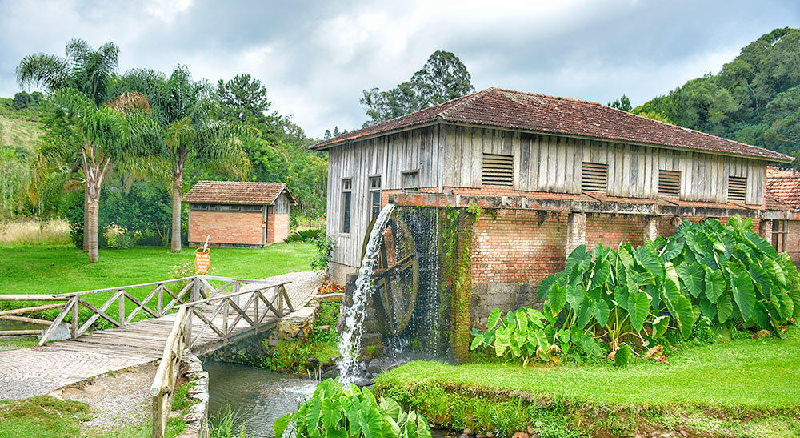
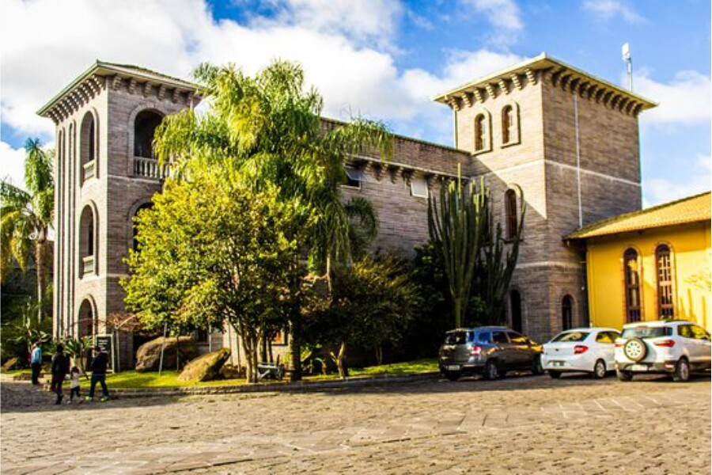
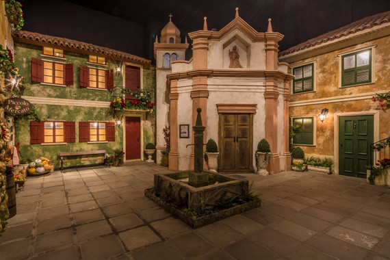
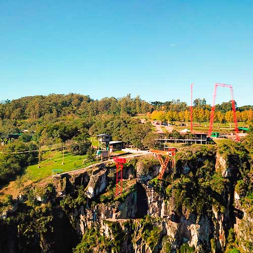
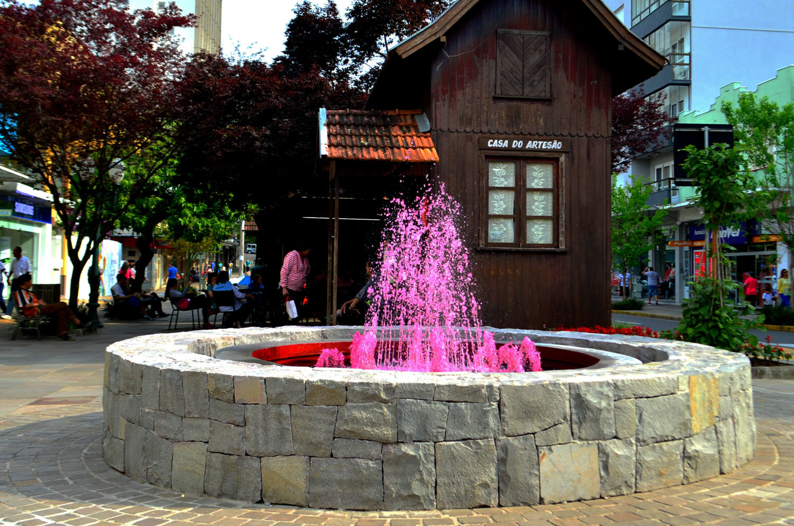
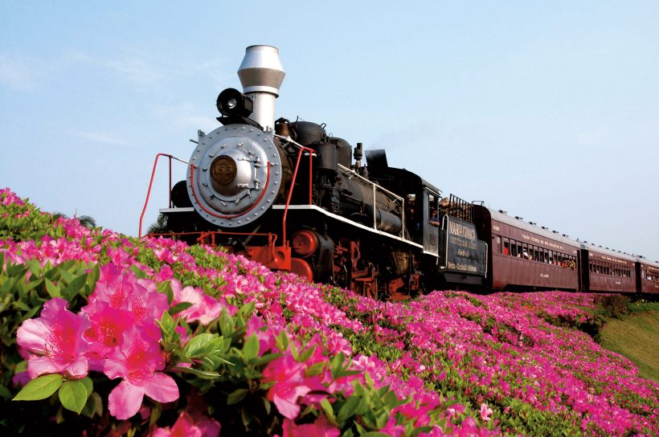
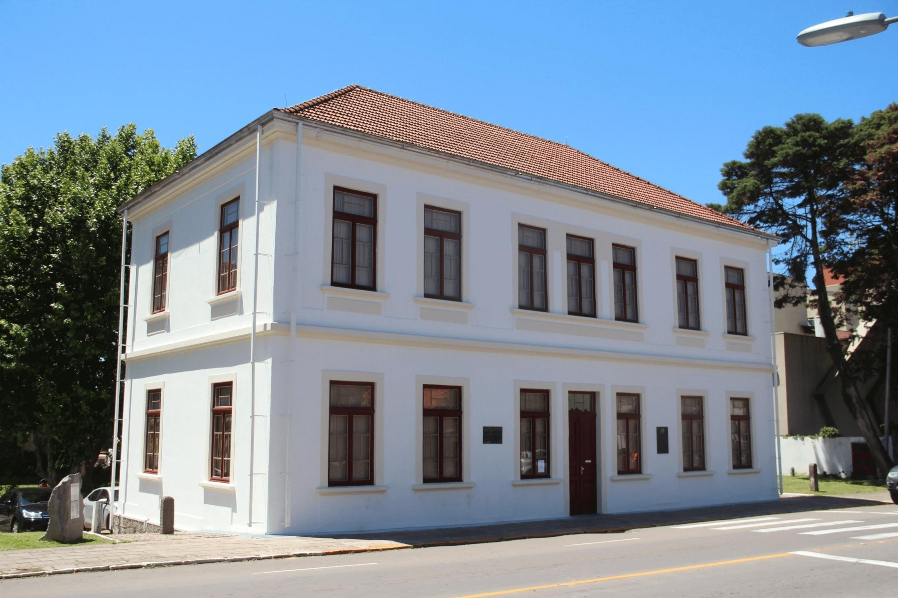
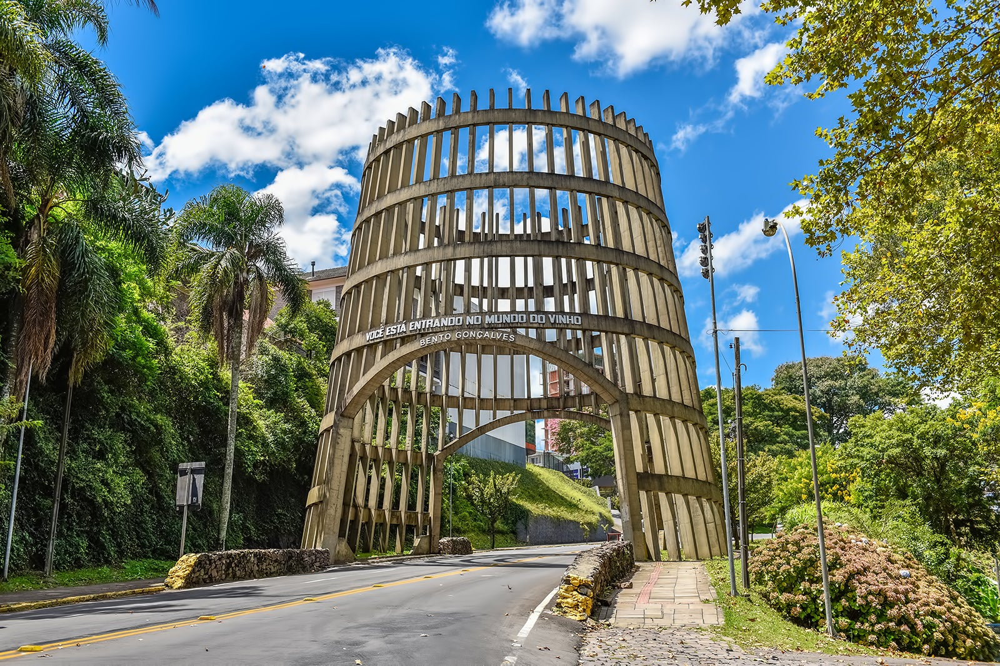
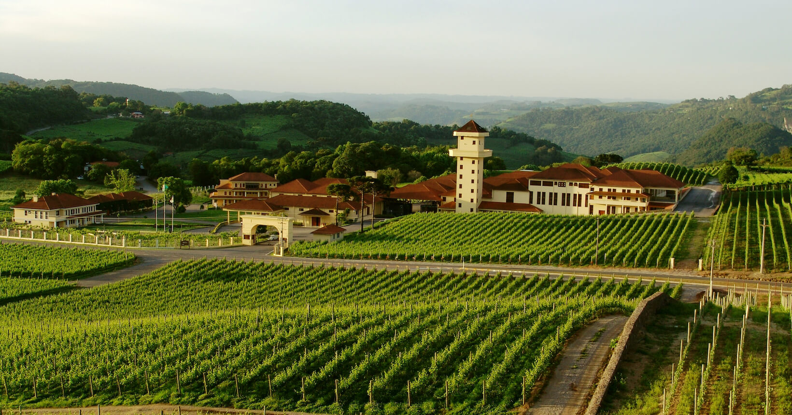

Principais Pontos Turísticos
Caminhos de Pedra
Telefone: (54) 3455-6333
Vinícola Casa Valduga
Telefone: (54) 2105-3154
Epopeia Italiana
Telefone: (54) 3455-2788
Parque de Aventuras Gasper
Telefone: (54) 99109-4824
La Fontana e Via del Vino
Telefone: (54) 3771-4238
Maria Fumaça
Telefone: (54) 3455-2788
Museu do Imigrante
Telefone: (54) 3771-4230
Pipa Pórtico
Telefone: (54) 3055-7202
Vale dos Vinhedos
Telefone: (54) 3451-9601